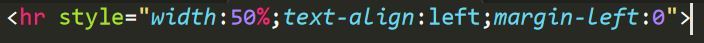
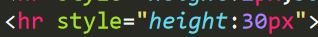
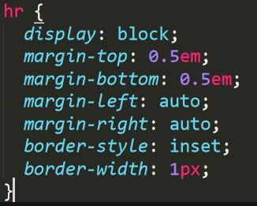

Go Back
The < hr > tag defines a thematic break in an HTML page (e.g. a shift of topic).
The < hr > element is most often displayed as a horizontal rule that is used to
separate content (or define a change) in an HTML page.
Example:
1)
< hr style="width:50%;text-align:left;margin-left:0">

2)
< hr style="height:2px;border-width:0;color:gray;background-color:gray">
3)
< hr style="height:30px">

3)
< hr style="width:50%">
4)CSS
hr
{ display: block;
margin-top: 0.5em;
margin-bottom: 0.5em;
margin-left: auto;
margin-right: auto;
border-style: inset;
border-width: 1px;
}
